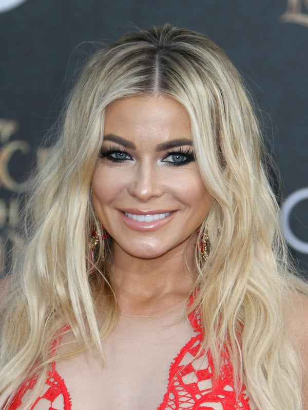
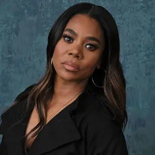

Elenco
Anna Faris
Personagem:Cindy Campbell
Uma jovem estudante inocente e corajosa, Cindy tenta desvendar os mistérios em torno de uma série de assassinatos enquanto protege seus amigos.
Shawn Wayans
Personagem:Ray Wikins
Um dos amigos do grupo, Ray é o típico personagem que tenta ser o "macho", frequentemente se metendo em confusões cômicas.
Marlon Wayans
Personagem:Shorty Meeks
É um personagem cômico e um tanto desajeitado, que tenta se mostrar corajoso e impressionar as garotas, mas frequentemente se mete em situações embaraçosas e hilárias.
Shannon Elizabeth
Personagem:Buffy
Shannon é uma personagem que não tem medo de expressar suas opiniões e é conhecida por suas reações dramáticas em situações de pânico.
Kurt Fuller
Personagem: Xerife
É um personagem atrapalhado e exagerado, que tenta manter a ordem em meio ao caos gerado pelos assassinatos.
Carmen Electra
Personagem: Drew
É uma jovem atraente e desinibida que, ao ser confrontada pelo assassino Ghostface, tenta usar seu charme para se safar da situação.
Jon Abrahams
Personagem: Bobby Prinze
O namorado desajeitado de Cindy, que busca impressioná-la. Ele traz um toque cômico e se envolve em várias situações absurdas.
Regina Hall
Personagem: Brenda
